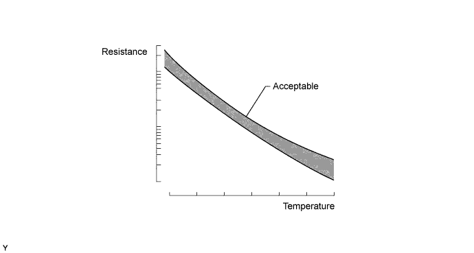
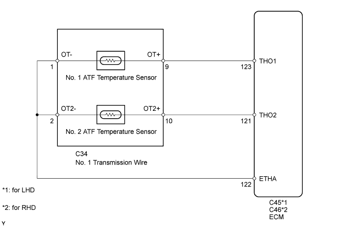
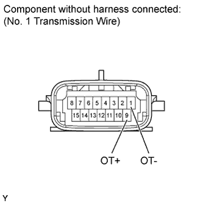
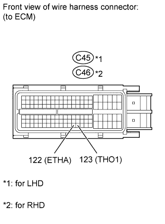

DTC P0710 Transmission Fluid Temperature Sensor "A" Circuit |
DTC P0712 Transmission Fluid Temperature Sensor "A" Circuit Low Input |
DTC P0713 Transmission Fluid Temperature Sensor "A" Circuit High Input |

| DTC Code | DTC Detection Condition | Trouble Area |
| P0710 | (a) and (b) are detected momentarily within 0.5 sec. when neither P0712 nor P0713 are stored (1 trip detection logic). (a) The No. 1 ATF temperature sensor resistance is below 79 Ω. (b) The No. 1 ATF temperature sensor resistance is higher than 156 kΩ.
|
|
| P0712 | The No. 1 ATF temperature sensor resistance is below 79 Ω for 0.5 sec. or more (1 trip detection logic). |
|
| P0713 | When 15 min. or more have elapsed after the engine is started, the No. 1 ATF temperature sensor resistance is higher than 156 kΩ for 0.5 sec. or more (1 trip detection logic). |
|

| DATA LIST |
Warm up the engine.
Turn the engine switch off.
Connect the intelligent tester to the DLC3.
Turn the engine switch on (IG).
Turn the intelligent tester on.
Enter the following menus: Powertrain / ECT / Data List.
According to the display on the tester, read the Data List.
| Tester Display | Measurement Item/Range | Normal Condition | Diagnostic Note |
| A/T Oil Temperature 1 | No. 1 ATF temperature sensor value/ Min.: -40°C (-40°F) Max.: 215°C (419°F) |
| If the value is -40°C (-40°F) or 215°C (419°F), the No. 1 ATF temperature sensor circuit is open or shorted. |
| Temperature Displayed | Malfunction |
| -40°C (-40°F) | Open circuit |
| 150°C (302°F) or higher | Short circuit |
| 1.INSPECT NO. 1 TRANSMISSION WIRE (NO. 1 ATF TEMPERATURE SENSOR) |
 |
Disconnect the C34 No. 1 transmission wire connector.
Measure the resistance according to the value(s) in the table below.
| Tester Connection | Condition | Specified Condition |
| 1 (OT-) - 9 (OT+) | Always | 79 Ω to 156 kΩ |
| 1 (OT-) - Body ground | Always | 10 kΩ or higher |
| 9 (OT+) - Body ground | Always | 10 kΩ or higher |
| ATF Temperature | Specified Condition |
| 10°C (50°F) | 5 to 8 kΩ |
| 25°C (77°F) | 2.5 to 4.5 kΩ |
| 110°C (230°F) | 0.22 to 0.28 kΩ |
|
| ||||
| OK | |
| 2.CHECK HARNESS AND CONNECTOR (NO. 1 TRANSMISSION WIRE - ECM) |
 |
Disconnect the C45 ECM connector (for LHD).
Disconnect the C46 ECM connector (for RHD).
Measure the resistance according to the value(s) in the table below.
| Tester Connection | Condition | Specified Condition |
| C45-123 (THO1) - C45-122 (ETHA) | Always | 79 Ω to 156 kΩ |
| C45-123 (THO1) - Body ground | Always | 10 kΩ or higher |
| C45-122 (ETHA) - Body ground | Always | 10 kΩ or higher |
| Tester Connection | Condition | Specified Condition |
| C46-123 (THO1) - C46-122 (ETHA) | Always | 79 Ω to 156 kΩ |
| C46-123 (THO1) - Body ground | Always | 10 kΩ or higher |
| C46-122 (ETHA) - Body ground | Always | 10 kΩ or higher |
|
| ||||
| OK | ||
| ||